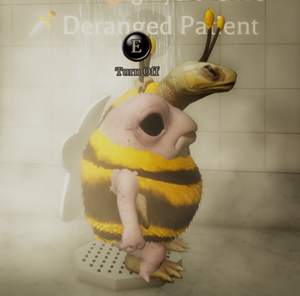
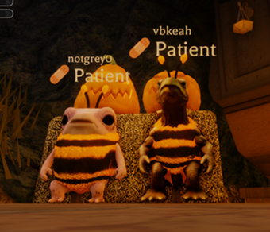
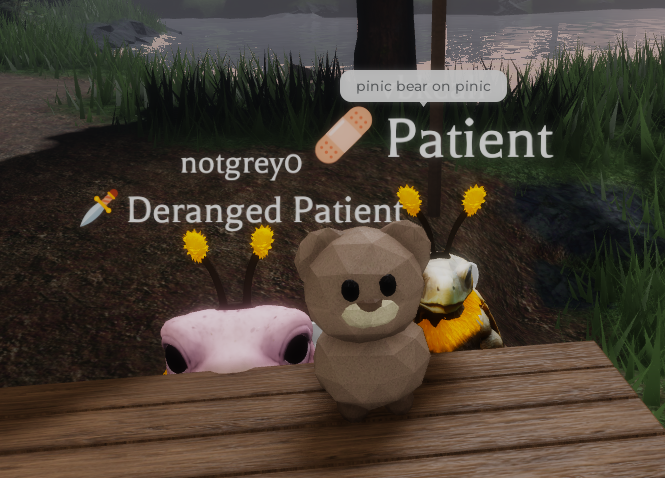
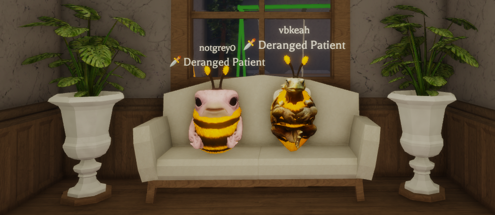

An official website for Pinic Lore!
On Roblox, Grey and Rae stumbled across a game called Equalia falls. Since then they've
spent time making up stories eventually leading to a large inside joke about an ingame-event
Picnic! Rae misspelt it once, leading to it being called Pinic.
Now the joke has become more than a simple inside joke. Pinic officially has lore!


On Equalia Falls Mental Institute, Rae and Grey were first
clueless to how the game worked.
However, as time went on, they began to learn the fun the
game held behind it, from silly moments with other patients
and nurses, to having fun with different events during
holidays and minigames. Now after many funny moments
together and witnessing hundreds of levels and thousands
of experience points, there is official Pinic Lore!
Pinic is a misspelt version of Pinic, an event that happens.
The story is true to our hearts,
and the joy shall be shared with many other Pinic lovers!
